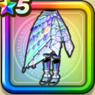

セイレーンドレス下
攻略班 6.5点 / 毒耐性+5%魅了耐性+5%毒耐性+10%魅了耐性+5%【スパスタ】スキルの体技ダメージ+1%バギ属性斬撃・体技ダメージ+5%【スパスタ】戦闘時のハッスルダンスHP回復効果+2%
くわしい特徴
【レベル別習得スキル】 Lv1毒耐性+5% Lv8すばやさ+5 Lv10魅了耐性+5% Lv12【スパスタ】戦闘時のハッスルダンスHP回復効果+2% Lv15【スパスタ】スキルの体技ダメージ+1% Lv18バギ属性斬撃・体技ダメージ+5% Lv20毒耐性+10% Lv20【スパスタ】きようさ+5 Lv23かいふく魔力+7 Lv25魅了耐性+5% 【限界突破スキル】 1凸攻撃力+5 2凸守備力+5 3凸すばやさ+7 4凸さいだいHP+10